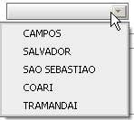
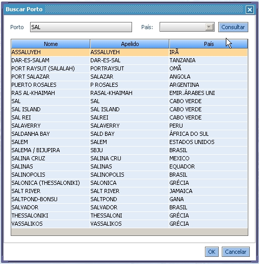
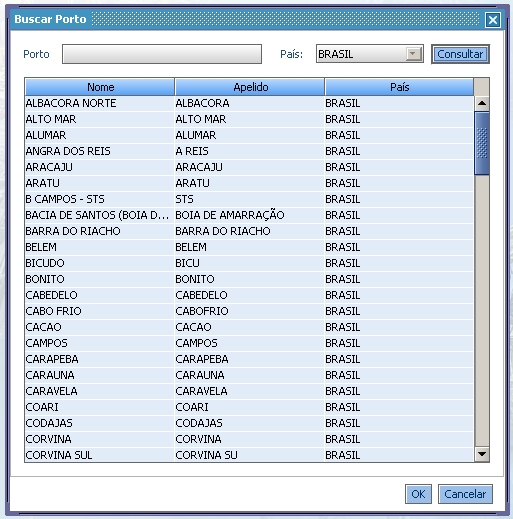

Criamos um componente para ajudar na busca de portos do SIGO II. Este componente pode ser consultado pelo nome completo do porto, ou por parte do nome. Uma busca por todos os portos de um país também é possível.
Além das buscas de novos portos, o componente guarda a relação dos últimos 5 portos utilizados pelo usuário. Ver imagem abaixo:
Ao digitar o nome completo do porto, o sistema automaticamente obtêm o porto digitado. Na imagem abaixo foi digitado o texto "salvador" e o sistema obteve automaticamente o porto SALVADOR.
Ao digitar parte do nome do porto, o sistema automaticamente obtêm os portos que o nome contenha parte do texto digitado. Na imagem abaixo mostra a busca de portos que têm o texto 'SAL' como parte do nome
O usuário poderá consultar os portos por um país específico. Neste caso, basta teclar "enter" no componente, após o sistema abrir a tela, digitar o país e clicar no botão consultar. A imagem abaixo, mostra uma consulta de todos os portos do Brasil
